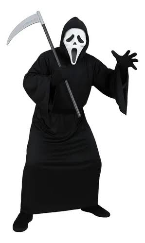
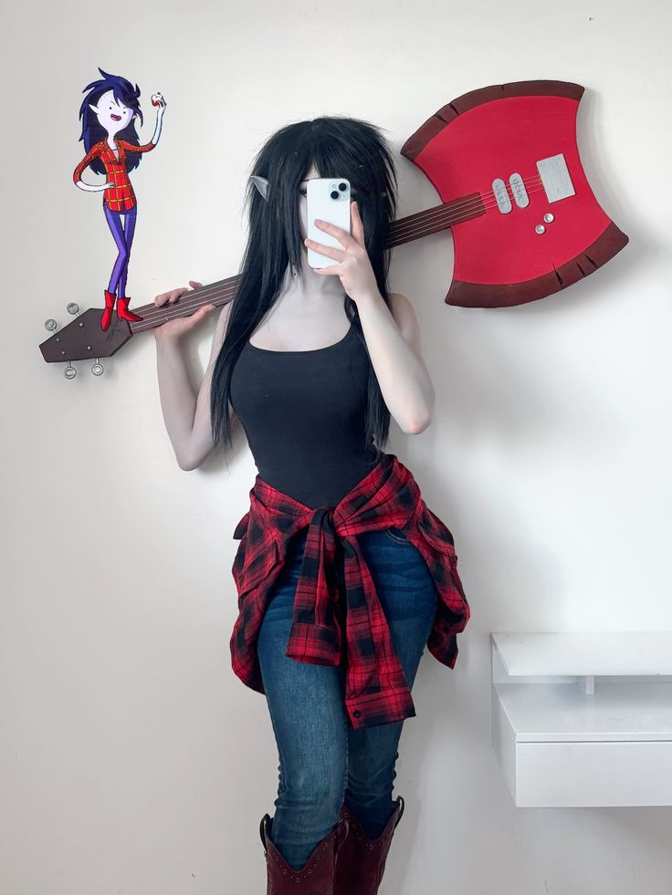
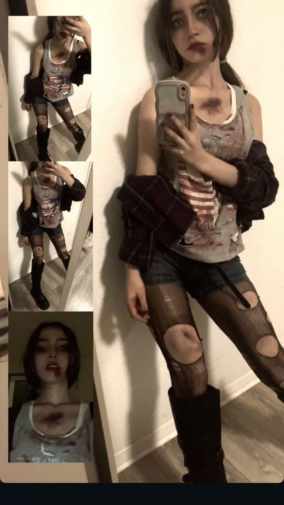
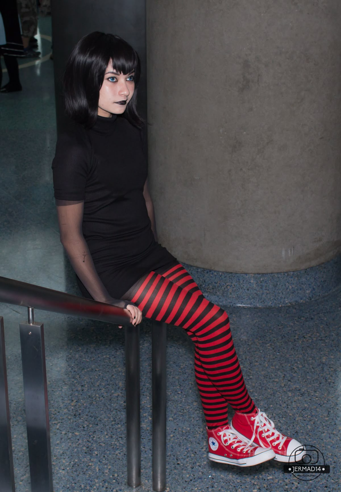
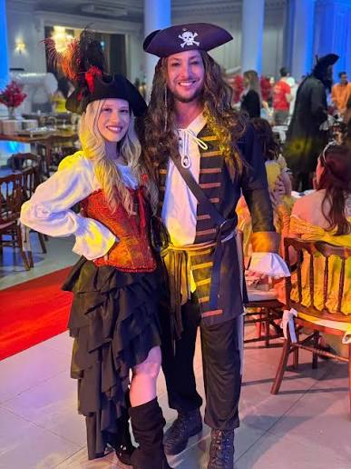
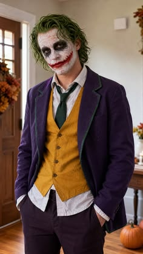
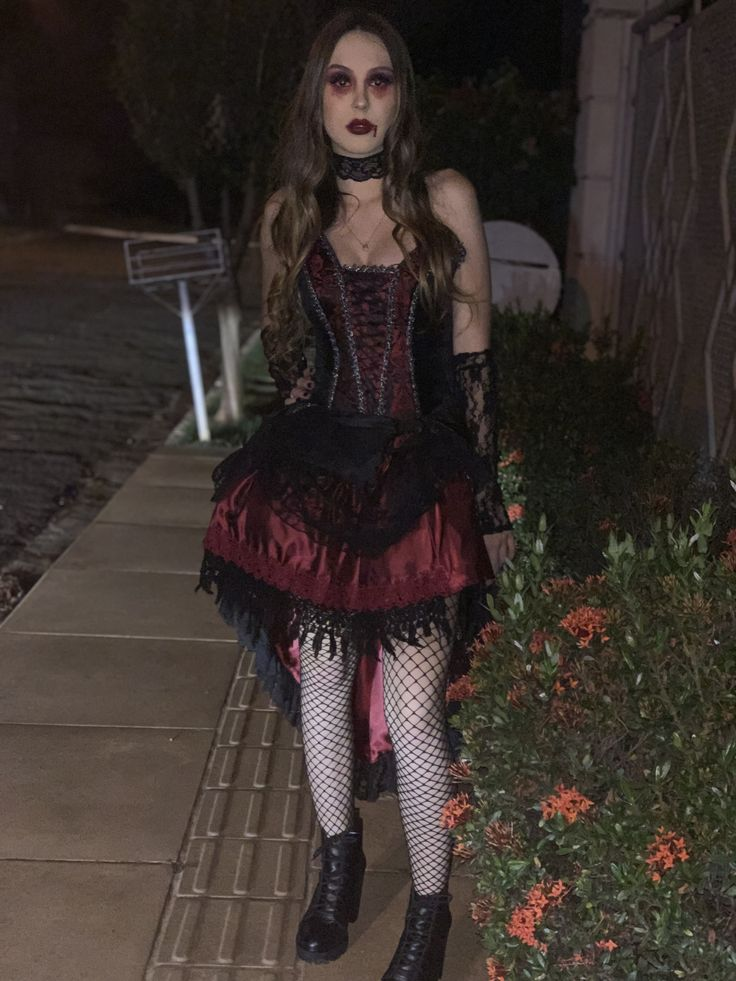
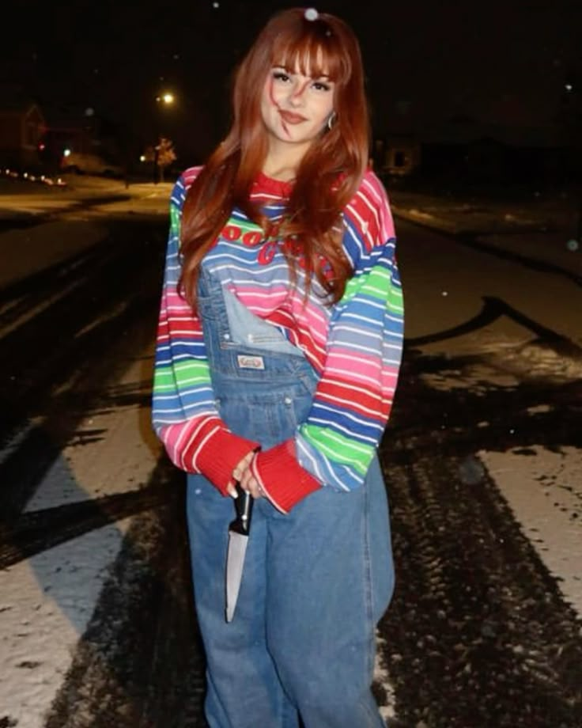

FANTASIAS DE HALLOWEEN

Pânico
O clássico é composto por túnica preta com capuz e máscara branca. Para inovar, personalize a roupa com acessórios, luvas ou maquiagem temática.

Ravena
Capa roxa com capuz, roupa preta e maquiagem em tons frios. Uma ótima opção para quem curte uma estética misteriosa e sombria.

Marceline
Roupa preta, botas vermelhas, cabelo escuro e uma guitarra de brinquedo. Use sombra avermelhada e maquiagem pálida para o estilo vampira roqueira.

Zumbi
camisa branca + gravata + maquiagem borrada.

Mavis
Vestido preto, meia-calça preta, botas vermelhas e maquiagem pálida. Uma vampira fofa, fácil de reconhecer e ótima para o Halloween.

Pirata
Camisa branca larga, colete preto, bandana e botas. Acrescente um tapa-olho ou maquiagem de cicatriz para dar personalidade.

Coringa
Terno roxo, colete verde, cabelo colorido e maquiagem branca com sorriso vermelho borrado. Ideal para uma fantasia dramática e assustadora.

Freddy Krueger
Suéter listrado vermelho e verde, chapéu marrom e maquiagem de queimaduras. A luva cenográfica com garras completa o visual.

Vampira
Corset ou vestido preto, renda, gargantilha, batom vermelho e presas falsas. O segredo é misturar elegância com detalhes assustadores.

La casa de papel
Macacão vermelho, botas e máscara característica. É uma das melhores opções para grupos, casais ou fantasias individuais.

Chucky
Jardineira jeans, camiseta listrada, cabelo ruivo e sardas desenhadas. Para inovar, faça uma versão com saia ou calça larga.
Fantasias para casais/Duplas

Victor e Emily — A Noiva-Cadáver
Um dos casais mais icônicos para o Halloween. Uma pessoa usa vestido de noiva envelhecido, véu e maquiagem azulada; a outra, terno preto, camisa branca e maquiagem de morto-vivo.

Coringa e Arlequina
Uma pessoa aposta no terno roxo ou em roupas estampadas; a outra usa maria-chiquinhas coloridas, shorts e maquiagem rosa e azul.

Shrek e Fiona
Roupas medievais, orelhas de ogro e maquiagem verde. Dá para fazer uma versão engraçada ou caprichar em figurinos parecidos com os do filme.

Mortícia e Gomez — A Família Addams
Vestido preto longo, cabelo escuro e batom vermelho para uma pessoa; terno risca de giz e bigode para a outra.

Casal de vampiros
Roupas pretas, detalhes vermelhos, presas falsas e maquiagem pálida. Cada pessoa pode criar uma versão diferente do vampiro clássico.

Wandinha e Enid — Wandinha
Uma pessoa usa preto, tranças e maquiagem gótica; a outra aposta em roupas coloridas, meias estampadas e acessórios divertidos.

Jack e Sally — O Estranho Mundo de Jack
Terno preto com listras brancas e maquiagem de caveira para Jack; vestido de retalhos coloridos e maquiagem de costuras para Sally.
Fantasias para trios

As Meninas Superpoderosas
Um dos casais mais icônicos para o Halloween. Uma pessoa usa vestido de noiva envelhecido, véu e maquiagem azulada; a outra, terno preto, camisa branca e maquiagem de morto-vivo.

Harry, Hermione e Rony — Harry Potter
Uniformes escolares, gravatas nas cores da Grifinória, capas pretas e varinhas. Ótimo para quem quer uma fantasia reconhecível.

As três bruxas de Abracadabra
Cada pessoa usa uma roupa com cores e mangas diferentes, cabelos volumosos e maquiagem de bruxa. Dá para adaptar os figurinos para qualquer gênero.

Du, Dudu e Edu
Uma pessoa usa camiseta vermelha, outra listrada roxa e outra verde. Com roupas simples e expressões exageradas, o trio fica divertido.

Três Espiãs Demais
Cada pessoa escolhe uma cor: vermelho, verde ou amarelo. Combine roupas ajustadas ou conjuntos coloridos com acessórios de espião.

Trio de faroeste
Chapéus, botas, lenços e coletes. Cada integrante pode representar o mocinho, o vilão e o fora da lei.
Fantasias em grupo

Turma do Scooby-Doo
Uma pessoa vai de Fred, outra de Daphne, outra de Velma e outra de Salsicha. Se tiverem um cachorro, ele pode entrar como Scooby!

Tartarugas Ninja
Roupas verdes e faixas nas cores azul, roxo, vermelho e laranja. Dá para montar com camisetas e máscaras de tecido.

Grupo de Stranger Things
Escolham quatro personagens e montem looks dos anos 1980 com jeans, camisetas estampadas, jaquetas e acessórios característicos.

Jovens Titãs
Robin, Ravena, Estelar e Mutano. Cada integrante tem uma cor e um estilo próprio, o que facilita dividir as fantasias.

O Mágico de Oz
Dorothy, Espantalho, Homem de Lata e Leão. Usem roupas coloridas, chapéus e maquiagem para identificar cada personagem.

Os Caça-Fantasmas
Macacões bege, cintos pretos e mochilas cenográficas. É uma fantasia perfeita para grupos que querem combinar sem gastar muito.

Monster High
Cada pessoa escolhe uma personagem e mistura roupas góticas, cores vibrantes, meias estampadas e maquiagem temática. Não precisa seguir o gênero original dos personagens.

Os quatro vilões do terror
Ghostface, Michael Myers, Jason e Freddy Krueger. Cada pessoa escolhe um vilão e usa sua máscara, roupa e acessório característico.